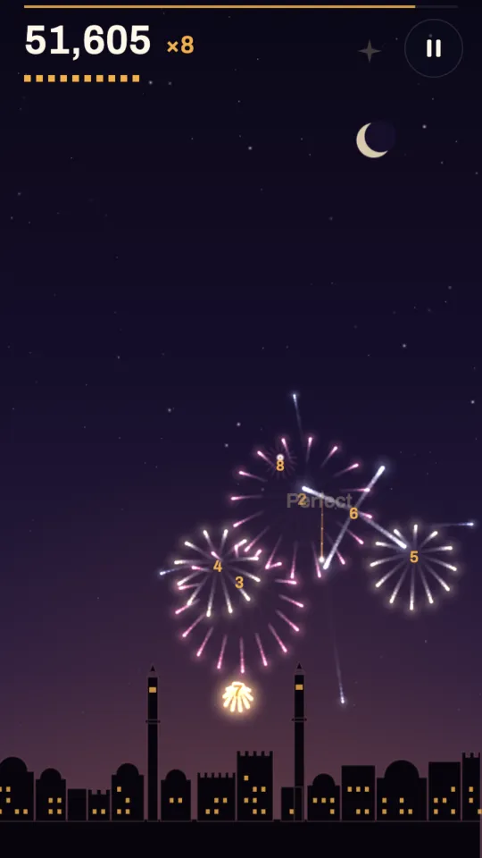
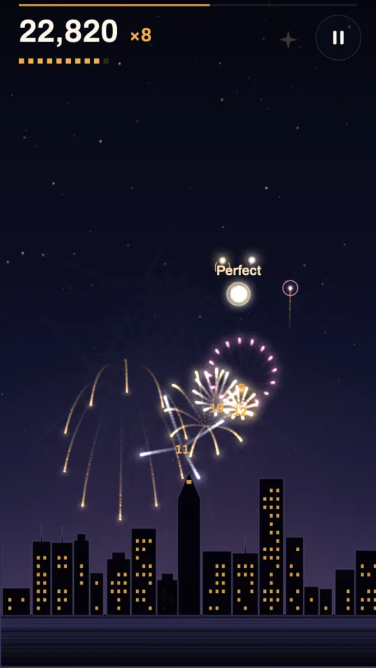
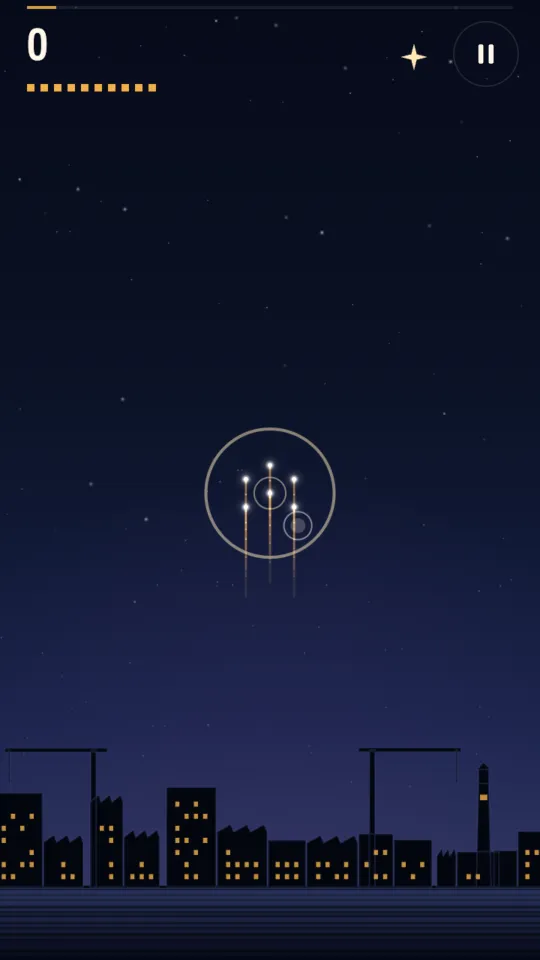
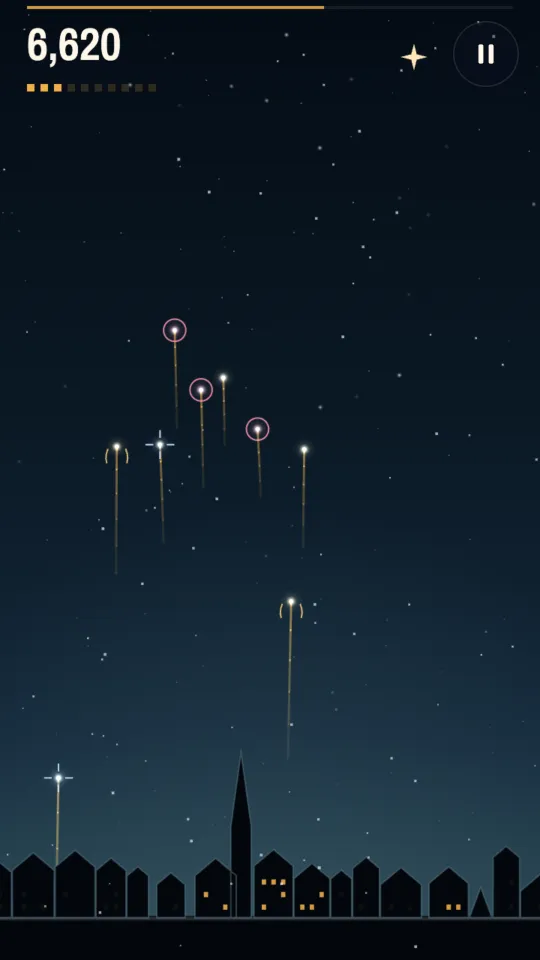
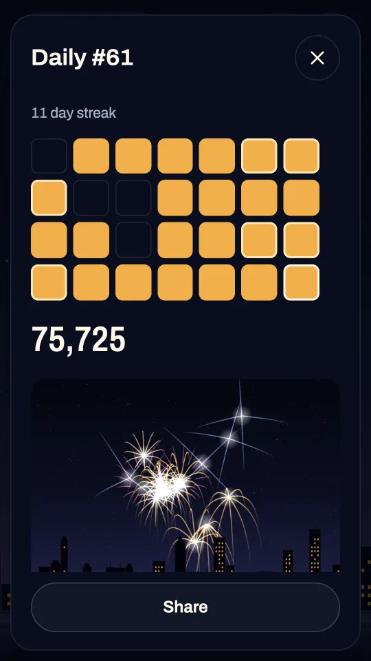
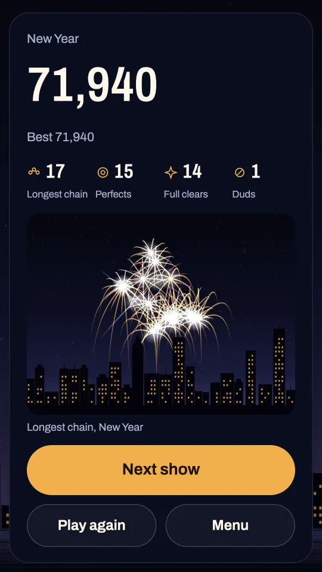
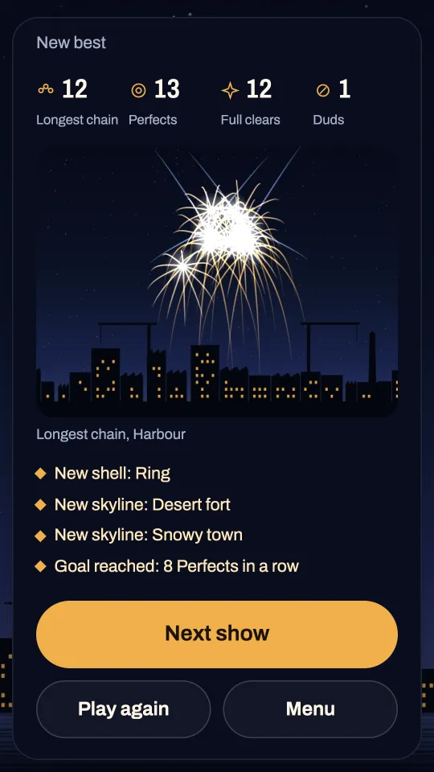

Peony
A round, even burst of champagne sparks. It lights the shells closest around it in every direction, which makes it the safest opening. Every new player starts with peonies alone.
Open from the start. Marked with a dot.
A fireworks chain game on a beat: tap one rising shell at its crest and chain the whole volley.


A show lasts about a minute of music. Shells climb from the skyline in volleys of five to nine, and every volley gives you exactly one spark. You do not tap each firework. You tap one shell, it bursts, and its sparks light every shell they touch. Those burst in their own shapes and light their neighbours in turn. That chain is the only way to clear the volley.
Where you start matters. Shells that are close together, in space and in time, catch each other. Look for the shell whose sparks will still find the others in the air: often the one in the middle of a group, or the one that peaks first while the rest are still climbing into it. A tap that hits no shell does nothing and does not spend the spark, so a slip of the finger costs you only a moment.
When you tap matters too. Every shell slows to a stop at the top of its climb, its crest, and crests land on the beat. Tap within 75 milliseconds of the crest for a Perfect: the shell blooms a quarter wider than usual and scores a bonus. A little early or late gives a normal bloom; far from the crest, the bloom is smaller and the chain may not reach.
Every miss costs light. Shells the chain misses fall as duds, and for each one a district of the city below goes dark. Clear a whole volley and a district lights again and your multiplier climbs by one, up to x8. A volley whose spark you never use drops the multiplier back to x1. The show ends after its last volley, or earlier if the last light goes out.
Scoring. Each shell in a chain is worth more than the one before it, up to the twentieth, all times your multiplier. Perfects, full clears and shells that a chain carries into the next volley add bonuses. The result card shows your score, longest chain, Perfects, full clears and duds, and a postcard of your longest chain.
The first show teaches itself. The first volley is a tight cluster marked by a shrinking ring, and any tap on it starts a chain that clears everything. The second has two groups, and the ring marks the shell that bridges them. The third shows you the crest. From the fourth volley on, there is no help on screen.
Pause with the button at the top right, with Back on Android or with Escape on the web.


Every shell carries a small mark as it climbs, so you can read the volley before it peaks. New shells open at fixed milestones, never at random, and from then on they turn up in your volleys.
A round, even burst of champagne sparks. It lights the shells closest around it in every direction, which makes it the safest opening. Every new player starts with peonies alone.
Open from the start. Marked with a dot.
Slow, wide gold sparks that hang and droop for almost twice as long as a peony's. They reach shells far below the burst, and the next volley rises into them, so a willow can carry a chain from one volley into the next.
Opens with a chain of 7 from one spark. Marked with a droop.
Four long silver jets in a cross. It reaches further than any other shell, but only along its four lines, so it rewards lining up a distant shell.
Opens with 3 Perfects in one show. Marked with a cross.
A hollow rose ring. Its sparks light nothing until they have travelled a short way out, so it misses shells right beside it and catches the ones around the rim.
Opens when you clear a volley of 8 or more. Marked with a hollow circle.
Start from the shell that peaks first. The later shells are still climbing, so they rise into its sparks instead of away from them.
Count the beat. Every shell peaks on a beat. Listen for the kick, or watch the skyline's rim light pulse, and tap on the next pulse.
Always spend the spark. A partial chain keeps your multiplier. Only a volley you never touch sends it back to x1.
Use willows as bridges. Their sparks fall slowly through the space where the next volley rises. A willow late in a chain can light the first shells of the next volley.
Aim crossettes. Their four jets reach far but narrow. Open with one when a shell sits straight above, below or beside it.
Do not start a ring in a crowd. It misses its close neighbours. It is at its best in the middle of a wide, loose volley.
Read the miss marks. A missed shell shows a faint mark where the nearest spark passed it, so you can see how far off the chain was and choose differently next time.
In the first volleys, place before you time. A good opening with a normal bloom often clears a small volley. Later, when shells are spread wide, the extra reach of a Perfect is what joins the groups.
Each burst plays the next note of the skyline's scale, snapped to the beat, and the burst that completes a full clear plays the home note, so a clean volley sounds finished. Everything you hear is made live by the game: a bell for the bursts, a soft kick, a shaker and a drone. With the sound off, the Android app marks each volley's crest beat with a short vibration instead.
D major pentatonic
108 bpm
Cranes, warehouses and a lighthouse. Open from the start.
E, hijaz colour
116 bpm
Walls, domes and towers. Opens when you finish a show with the city lit.
B minor pentatonic
100 bpm
Pitched roofs and pines. Opens with 6 full clears in one show.
C major pentatonic
124 bpm
Towers and a clock tower. Open from 26 December to 6 January.
F major pentatonic
112 bpm
Bridges over a river. Comes with Remove ads in the Android app.

Once a day there is one show that every player gets: the same volleys, the same skyline and the same music, on Android and on the web. Its number comes from your own local date, so the next one arrives at your midnight, wherever you are. The skyline rotates between the harbour, the desert fort and the snowy town, and on 31 December and 1 January the Daily Show is the New Year finale. All four shells appear in it, whatever you have opened yourself.
You get one scored try. If you leave in the middle, the score so far is kept. In the Android app you can take a second try by watching an ad, once a day, and the day keeps your better score. There is no Encore in the Daily Show.
A calendar of the last four weeks and a streak count show which days you played. When you are done, Share sends a wordless card: the day's number, a row of marks for how each volley went, your longest chain and your Perfects, a small picture of that chain, and a link to the game on the web.


Each skyline keeps a postcard of your longest chain there: a still, long exposure picture redrawn from the chain's own bursts. Tap the postcard on the menu to see it full size. A longer chain on the same skyline replaces it.
Three standing goals sit under the Play button with your best so far: a chain of 15 from one spark, a show with no dud, and 8 Perfects in a row. They do not expire, and chains of 15 and more do happen once willows carry chains from volley to volley.
Skychime is free to play with ads, and the Android app offers one optional, one-time Remove ads purchase through Google Play.
There are never ads during a show. A full screen ad can appear only when you press Next show between shows, at most once every three shows, and never at launch, after the Daily Show or when you leave. Rewarded ads play only when you choose one, for the reward written on its button: relight the city when its lights go out (once a show), take a second try at the Daily Show (once a day), or play three shows on a skyline you have not opened yet (once a day). Saying no costs nothing: the show simply ends with its score. The app shows no banner ads.
Remove ads removes the ads between shows for good, gives every rewarded bonus at once without an ad, and opens River city, a skyline that only this purchase opens. It belongs to the Google account that bought it, and Restore purchases in Settings brings it back after a reinstall.
The browser version has no full screen or rewarded ads and no purchases. On wide screens an ad may appear in a column beside the game on the menu and result screens, never over the game and never during a show. Your progress is kept in your browser on this device.
Every burst is lit locally, and a limiter allows at most three large flashes in any second. A Reduced flashing setting softens them further, and Reduced motion follows your phone's setting unless you change it in the game. There is no account, the Android app plays offline, and your progress stays on your device. The privacy policy explains what Google's ad and billing software collects.
Free with ads, with an optional one-time Remove ads.